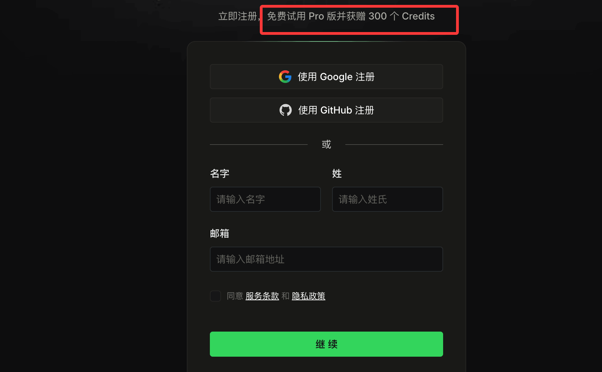
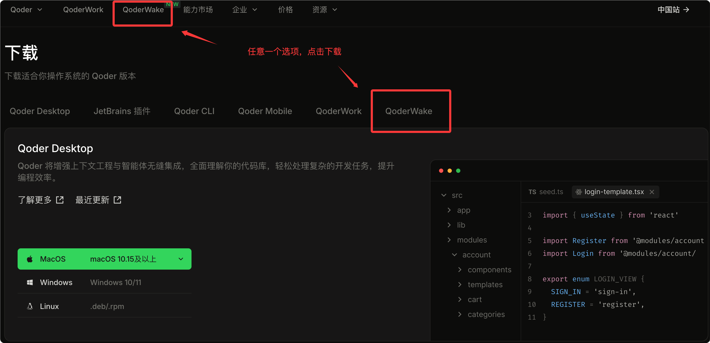
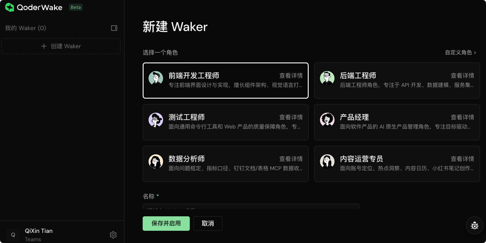

QoderWake 入门教程
QoderWake 让你在本机组建一支数字员工团队（Wakers），每个员工有岗位、有名字、有人设、有专长，可以被你召唤聊天或干活，也可以按计划或事件自动开工。
产品核心理念：7x24 小时数字员工，"Always awake, always working."

QoderWake 是一款数字员工管理平台，支持本地部署和云端部署。
核心特性：安全可控、生产可用、持续进化。
-
核心概念：员工角色（Role）到数字员工（Agent）再到团队/组织（Agent Teams），三层递进。

注册完成后点击右上角的下载按钮：

选择 QoderWake 选项，根据你的电脑系统，下载安装程序：

下载后，双击安装，安装完成界面如下：

左下角设置按钮，可以设置语言，切换到中文后，如下：

可用角色一览
当前邀测覆盖以下角色，选最贴近你需求的即可：
| 角色 | 岗位特性 |
|---|---|
| 后端工程师 | 专注于 API 开发、数据建模、服务集成、性能优化和线上稳定性。遵循增量交付、测试验证和约定优先设计的工程实践。员工自动分析 Bug/Issue，改完代码直接提 PR。 |
| 前端工程师 | 专注前端界面设计与实现，擅长组件架构、视觉语言打磨、响应式适配、无障碍优化和性能调优。遵循增量交付、分层验证和基于证据的校验，兼顾用户体验与工程质量。 |
| 测试工程师 | 面向通用命令行工具和 Web 产品的质量保障角色，专注测试计划文档、端到端测试、缺陷复现和基于证据的报告；不运行单元测试，也不修复问题。 |
| 产品经理 | 面向软件产品的 AI 原生产品管理角色，专注目标驱动的需求全生命周期管理、PRD 生成、用户反馈分析、竞品研究和发布沟通，并对外部写入设置明确审批门禁。 |
| 数据分析师 | 面向问题框定、指标口径、数据收集、数据诊断、市场背景和证据化建议的 AI 原生数据分析师。 |
| 内容运营 | 面向账号定位、热点洞察、内容日历、小红书笔记创作、视觉素材 brief、审批后发布、评论互动、数据复盘、品牌合规和跨平台改写的 AI 原生内容运营角色。 |
| 自定义 | 自己定义岗位的工作方式与工作流，可挂载 MCP、Skill 等任意配置。 |
安装环境说明
QoderWake 支持本地部署和云端部署。
建议部署在稳定在线、网络良好的常开设备或云桌面环境中，以保障数字员工 7x24 小时持续运行。
Windows 版本敬请期待，暂未对外开放，请先在 macOS 或 Linux 上使用。
本地部署要求
推荐部署在可长期稳定运行的本地设备上，例如 Mac mini，以获得更好的 7x24 小时运行体验。
| 系统 | 版本要求 |
|---|---|
| macOS | 13.0 及以上版本 |
| Linux | 推荐 Ubuntu 22.04 LTS 及以上版本，需启用 GUI 桌面以使用本地 Web Console |
云端部署要求
支持主流云桌面和云主机环境。
为方便浏览器登录和本地 Web 管理，推荐使用无影云电脑企业版或个人版。
前置工具
产品预置多个软件研发类数字员工角色，安装前请先准备好 Git 环境，并确认当前账号能正常访问目标代码仓库：
- 已安装 git
- 已完成仓库认证配置
- 可以正常执行 clone、pull、push 操作
本地或云端部署环境均需支持外部网络访问，用于用户登录、模型调用、代码仓库访问等。
在企业网络、代理或防火墙环境下，请提前放通必要的 HTTPS 出站访问。
步骤 1：安装 QoderWake
根据你的操作系统选择对应的安装方式。
macOS 安装
方式一：直接下载安装包。
- Apple 芯片（ARM）：下载 ARM 版
- Intel 芯片：下载 Intel 版
方式二：通过终端一键安装。
# 一键安装命令，自动检测平台并完成安装 curl -fsSL https://qoder-ide.oss-ap-southeast-1.aliyuncs.com/qoderwake/install.sh | bash
脚本会自动完成：检测平台、下载并校验安装包、安装主程序和资源文件、把命令入口加入 PATH、启动浏览器登录、启动本地常驻服务并打开 Web Console。
安装完成后命令入口为：
~/.qoderwake/bin/qoderwake
Linux 安装
打开终端，运行与 macOS 相同的一键安装命令。
安装脚本会自动完成以下步骤：
- 检测 Linux CPU 架构
- 下载并校验对应平台的 QoderWake 安装包
- 安装 QoderWake 主程序和资源文件
- 创建命令入口并尝试加入 PATH
- 启动浏览器登录
- 登录后启动或重启本地常驻服务
- 自动打开本地 Web Console
命令入口：
~/.qoderwake/bin/qoderwake
默认 Web Console 地址：
http://127.0.0.1:19820
步骤 2：打开控制台
浏览器访问 http://127.0.0.1:19820/，这是 QoderWake 在你本机的管理台。
员工管理、派活、配置权限都在这里完成。

界面布局说明
| 区域 | 功能说明 |
|---|---|
| 左侧边栏 | 展示"我的 Waker"列表，显示所有已创建的员工和最近活动时间 |
| 顶部按钮 | 点击"创建 Waker"快速新建员工，右侧支持新建任务 |
| 主区域 | 进入某个员工后默认打开对话页面，可直接派活 |
| 右侧边栏 | 查看已创建的任务及当前运行中任务的详情 |
首次访问会引导你登录账户，按提示完成即可。
步骤 3：创建数字员工
点击左侧 "创建 Waker" 按钮进入创建流程。

创建流程
- 选一个角色模板：每个角色模板自带人设、典型工作流、核心技能集和默认问题，点击"查看详情"可以预览。
- 或自定义角色：如果预置角色都不合适，可选择"自定义角色"，完全由你定义这位员工的人设、专长、工作风格，再为其配置技能、连接器和权限。
- 填写基本信息：填写员工的名字、头像、简介。选择预置角色后内容会自动带过来，可按需调整。
- 保存：点击保存，员工就创建好了。新员工首次创建后会进入引导，推荐你先挂哪些技能、接哪些渠道，可以跳过留待后续配置。
为提升自定义角色的使用效果，建议在创建时尽量提供完整的角色信息——角色定位、核心职责、工作流程、所需技能以及 MCP 等工具能力配置。
步骤 4：跟员工开始干活
新员工创建完成后，可以选择 直接对话 或 创建自动任务 两种方式派活。
对话任务
直接在输入框输入需求并发送，员工就开始干活。

过程中你可以进行的操作：
| 操作 | 说明 |
|---|---|
| 追问、调方向 | 随时插话，员工接着上下文继续 |
| 附文件/截图 | 任何一轮发言都能再贴附件 |
| 打断 | 员工方向跑偏可以让他停 |
| 审批操作 | 当员工要动文件、跑命令、上网时会停下来征求同意，你点"允许"或"拒绝" |
| 回答员工提问 | 他遇到选择会回头问你，直接在卡片上选 |
| 切换 AI 模型 | 对话中途感觉不够聪明或想省钱，顶部下拉可以换模型继续 |
| 看思考过程 | 能实时看到员工下决定前的推理思路 |
| 看产物 | 右侧面板实时展示员工产出的代码补丁、新生成的文件等 |
| 选择工作目录 | 在对话底部可以选择员工工作的本地目录 |
自动任务
适合"每天跑一次"、"监听某个仓库变化就自动响应"这类场景。

进入 Waker 详情 - 触发任务 - 新建，可配置以下内容：
| 配置项 | 说明 |
|---|---|
| 任务名和描述 | 员工读了就知道要做什么 |
| AI 模型 | 选择使用的模型 |
| 工作目录 | 在本地哪个目录、哪个仓库或哪个项目工作区里执行 |
| 触发方式（最多 5 种） | 定时（一次性/周期性/复杂周期）、事件驱动（监听 GitHub 仓库变化）、网络回调（第三方系统通过固定地址直接回调触发） |
| 最大次数/截止日期（可选） | 限制任务不要无限跑 |
保存后，员工按你设的节奏自动干活。
你可以随时暂停/启用、立即运行测试、查看运行历史。
步骤 5：管理你的数字员工
进入员工详情页，可以查看和调整员工的所有配置。
| 目录 | 功能说明 |
|---|---|
| 首页 | 看头像、状态、入职天数、触发任务数、对话任务数、工作热力图 |
| 项目 | 给他绑定要工作的代码仓库或本地目录。一个项目可包含多个源（多个目录或仓库），项目记忆与员工个人记忆分开 |
| 触发任务 | 增/删/改/暂停他身上的自动化任务 |
| 对话任务 | 翻历史对话，继续聊 |
| 记忆 | 看/编辑他对你和项目的长期认知。来源：对话过程中自动沉淀、手动编辑、系统定期梳理与去重。本地存储，不上传云端 |
| 技能 | 从 Qoder 官方 Skills Marketplace 安装，本地上传自定义技能，或开关已有技能。内置技能不可卸载 |
| 连接器 | 对接外部工具/服务（GitHub、Jira、GitLab 等） |
| 权限 | 工具防护、文件防护、内置工具策略。高危操作会弹出审批卡片 |
员工配置详解
记忆管理
每个员工有自己的长期记忆，用于积累对你和项目的认知。
记忆来源有三种：
| 来源 | 说明 |
|---|---|
| 自动沉淀 | 对话过程中员工认为值得记住的信息会自动写入 |
| 手动写入 | 你可以进记忆页直接编辑 |
| 系统整理 | 定期由系统帮他梳理和去重 |
进入 员工详情 - 记忆，可浏览、搜索、编辑所有记忆条目。
记忆存储在本地，不上传云端。
技能（Skill）
技能是员工在对话或触发任务中可以调用的专项能力包。
- 技能市场：从 Qoder 官方 Skills Marketplace 安装
- 上传 Skill：本地自行导入
- 内置技能：系统自带，不可卸载
进入 员工详情 - 技能，可查看已安装技能、搜索市场、上传自定义技能。
连接器（Connector）
连接器是员工对接外部工具/服务的桥梁，支持手动添加连接器。
项目
项目是员工的工作空间。
进入 员工详情 - 项目，可以绑定本地目录或 git 仓库，一个项目可以包含多个源（多个目录/仓库），项目有独立的记忆，跟员工个人记忆分开。
权限管理
权限控制员工能做什么、不能做什么。
进入 员工详情 - 权限，包含两大类防护，外加内置工具策略。
工具防护
基于内置安全规则对工具参数做校验，命中高危规则后会请求用户授权。
| 规则分类 | 检测内容 |
|---|---|
| 命令注入 | 检测 rm、mv 等危险操作 |
| 资源滥用 | 检测 fork 炸弹、系统重启等 |
| 代码执行 | 检测 curl | bash 等远程执行 |
| 网络滥用 | 检测反弹 shell、本地回环访问 |
| 敏感文件访问 | 检测访问系统关键文件 |
| 权限提升 | 检测 sudo 等提权操作 |
文件防护
控制员工对本地文件的读写权限。
内置工具
对 Waker 可用的内置工具设置 允许/询问/禁用 策略。
当员工执行操作触发安全规则时，会弹出审批卡片让你决定是否允许。
场景示例：自动修复 Bug
两种驱动方式可以实现自动修复 Bug。
方法 A：手动发起对话
- 打开控制台，选一个 后端工程师 角色的 Waker
- 在对话框输入需求并附上报错信息
- 员工分析问题、定位根因、给出修复方案
- 确认后让他执行修复并提 PR
实例
# "帮我排查这个报错的根因并给出最小修复方案"
# 员工会执行类似以下操作：
# 1. 分析报错日志，定位问题代码
# 2. 给出修复方案供你确认
# 3. 执行代码修复
# 4. 提交 PR 到代码仓库
过程中要执行命令或改文件时，他会先征求你同意。
方法 B：设自动任务处理
- 进入 员工详情 - 触发任务 - 新建
- 触发方式选 "事件"，监听 GitHub 仓库的 Issue 变化
- 任务描述写："有新 Bug Issue 进来时，自动分析并给出修复 PR。"
- 保存后，每当仓库出现新的 Bug Issue，员工自动启动分析与修复
两种方式各有适用场景：方法 A 适合临时、一次性的问题排查；方法 B 适合持续性的自动化运维，减少人工介入。
常见问题
安装后无法打开 Web Console？
确认本地服务是否正常运行，检查 http://127.0.0.1:19820 是否可以访问。
如果端口冲突，可检查是否有其他程序占用了 19820 端口。
员工执行任务时卡住不动？
检查员工是否需要你的审批确认，查看对话窗口是否有待处理的审批卡片。
自定义角色效果不好？
建议在创建时提供完整的角色信息：包括角色定位、核心职责、工作流程、所需技能以及 MCP 等工具能力配置，信息越完整效果越好。
如何反馈问题？
遇到任何问题或者有产品功能想反馈，点击控制台右下角的反馈按钮提交，团队会尽快回复并解决。

点我分享笔记